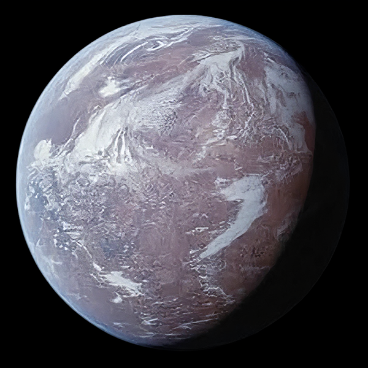

Ferrix

Название: Феррикс
Обитаема: Да
Население: Среднее
Жители / Раса: В основном люди
Климат: Умеренный, пыльный
Тип планеты: Промышленная, городская
Размер: Средняя
Особенности:
- Центр для восстановления и утилизации техники
- Активное сопротивление против Империи
- Культурные традиции, например звон колокола утреннего сигнала
Появления: Эпизоды 1–3, 7, 12 (сезон 1 сериала Andor)